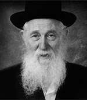

A Paragon of Mesirus Nefesh
For nineteen years, the Rebbe kept in his room the pages of the Machzor that Rabbi Moshe Greenberg a”h wrote when he was in a Siberian labor camp. * A Chassid who lived a life of mesirus nefesh along with bittul and hiskashrus to the Rebbe.

He was born in Adar 5687/1927 in Capresti, Bessarabia, which was then part of Romania (now Moldova). His parents were R’ Naftali, a shochet and mohel, and Rochel, a woman of chesed, who contributed greatly to the Jewish chesed organizations in her town.
He lost his mother when he was still a young boy in the Second World War, when the family fled Romania and ended up in Tashkent, Uzbekistan. She passed away due to starvation and disease. R’ Naftali was left to raise the orphans. The two boys, Moshe and Yosef, were sent to the underground Yeshivas Tomchei T’mimim in Tashkent. Yosef, who was six, was sent to learn with the youngest boys, while fourteen year old Moshe learned Nigleh and Chassidus with the older talmidim.
R’ Naftali met another refugee, R’ Aharon Chazan. Even in distant Tashkent the two of them did not give up their Chassidic practices. Now and then they went to immerse together in the Ankhor River in the center of Tashkent. Unfortunately, one of those times ended in tragedy when R’ Naftali entered the river and was swept away.
Now, without mother or father, the girls in the family, who were older, did all they could to help their younger brothers. The boys continued learning, despite their double bereavement.
R’ Moshe did not speak much about this period of his life. One time he recounted that when he learned in Tashkent he first heard about the Rebbe Rayatz (his family not being Lubavitch) and his mesirus nefesh to maintain Judaism. That was when he became a Chabad Chassid “with all my heart.”
CAUGHT IN A TRAP
At the end of the war, like many other Chassidim, he heard about the possibility of crossing the border with forged Polish passports, but he did not manage to join the others. In 5708, a year after the gates were closed in Lvov, four Chassidim tried crossing the border anyway. They were Moshe Greenberg, Yaakov Lepkivker, Meir Junik, and Moshe Chaim Dubrawski.
They contacted someone who presented himself as a professional border smuggler. It turned out that he was an agent planted by the government. It was a Friday when the four of them began crossing from the Soviet Union into Germany.
At a certain point, the agent showed them the road and then left. Instead of moving forward and crossing the border, the foursome decided to remain in a house near the border so as not to desecrate the Shabbos. In the meantime, the traitorous smuggler contacted the border police who arrested the four Chassidim and put them in jail in Chernowitz.
During the interrogations, the interrogators tried to extract the names of other Chassidim from him, with whom he was in contact. However, R’ Moshe did not utter a single detail about his fellow Chassidim. The interrogators were furious over his silence and in one of the sessions, an interrogator kicked R’ Moshe so hard that he felt the pain for months afterward.
Later, when he was asked how he was able to withstand the questioning, he said, “I knew some chapters of Tanya by heart and as soon as the interrogation began, I began reviewing them in depth, so I simply did not hear what they were asking me.”
The interrogations went on for a long time, until finally they were sent to Kiev for a trial. R’ Moshe was sentenced to twenty five years in Siberia.
He was sent to a labor camp where there were more than a thousand prisoners who worked building an electrical power station. Only twenty of them were Jewish. Despite the starvation and the suffering, he made a firm commitment to keep mitzvos, even if it entailed mesirus nefesh. Throughout the years he spent in the labor camp, he never ate a crumb of food that had a kashrus problem. His “meals” during those years consisted of bread, a little sugar, and herring. This is what sustained him as he worked at hard labor which required great physical strength.
He refused to work on Shabbos even if this entailed danger. When he refused, he was sentenced to five days in solitary confinement. Every Shabbos he refused to work and he was confined for five days. He went out for a day or two of work, and was then sent back to solitary confinement.
After two years of great suffering his strength gave out and he became sick and was hospitalized. Jewish prisoners had pity on him and bribed the commander who finally agreed to allow R’ Moshe to go to the work area on Shabbos without having to do any labor. From then on, every Shabbos R’ Moshe would go to the work area and would spend the time there murmuring to himself, “Shabbos, Shabbos,” lest he forget the holiness of Shabbos for even a moment.
THE MAKESHIFT MACHZOR
R’ Moshe arrived in the labor camp at the end of 5711. Despite the difficulties he had to contend with, he was focused on the upcoming Yomim Nora’im. He yearned to get hold of a Machzor which was a dream that seemed impossible to attain, but R’ Moshe was not the sort to give up easily.
R’ Moshe located someone on the “outside,” an engineer who worked in the camp on various projects. He thought that the engineer might be a Jew. He waited for an opportune time to approach him and whispered in Yiddish, “Can you help me?” At that time, most Jews in Russia spoke fluent Yiddish. He saw a glint of understanding in the man’s eyes.
“Can you bring me a Machzor for the Jewish inmates here?” he asked. The engineer hesitated. Doing this would endanger both of them, yet he agreed to try.
A few days went by. “Any developments?” asked R’ Moshe. “I have good news and bad news,” said the engineer. He had found a Machzor for the Yomim Nora’im but it was the only Machzor that belonged to the father of his girlfriend. When she asked her father for it, he reacted angrily.
But R’ Moshe did not give up. Would the man be willing to lend it out for a few days? He would copy it and return it in time for Rosh HaShana. The man agreed and the engineer smuggled the Machzor into the camp and gave it to R’ Moshe.
In order to copy it, R’ Moshe built a large wooden box and crawled into it for a few hours each day. There, hidden from prying eyes, he copied all the t’fillos. Just one page was missing, the page of Kol Nidrei, the first t’filla said on Yom Kippur.
R’ Moshe returned the Machzor and fall arrived. From letters they received, the Jewish inmates learned when the Yomim Tovim would fall out. For Rosh HaShana, they bribed the guards with cigarettes to allow them to remain in camp and pray. With the help of the handwritten Machzor, R’ Moshe was the chazan. He read out loud and the rest repeated after him in low, though festive, voices. Seven days later they met again for Yom Kippur, but despite their efforts, nobody remembered all the words of Kol Nidrei.
After nearly seven years of imprisonment, R’ Moshe was released following the death of Stalin, along with all the political prisoners. The only thing he took with him was his Machzor.
Many years went by and in 5733, he went to the Rebbe and gave him the pages of his handwritten Machzor as a gift. Most gifts given to the Rebbe were put in the library, but R’ Moshe’s Machzor remained in the Rebbe’s room for nineteen years! It was given to the library shortly before 27 Adar 5752, when the Rebbe mysteriously decided to tidy up his room.
A LETTER TO THE REBBE
R’ Moshe was released in 5715 and he went to Moscow where he reunited with his family. He became engaged to Devorah, the daughter of R’ Aharon Chazan. The new couple began their married lives in a house they rented in Moscow.
A description of their wedding is in his father-in-law’s memoirs:
“We celebrated at home with over 100 guests. It was truly a joyous occasion. I was the mesader kiddushin because the rabbanim who came were afraid to approach the chuppa when they saw such a large crowd. The many guests who danced also looked out for uninvited guests, i.e. informers. The young couple found a place to live near us.”
His father-in-law worked in a factory. That was no small thing in those days, to support oneself with official work without having to work on Shabbos. At a certain point, a local gentile coveted his job and began harassing R’ Chazan so he would leave. The harassment grew worse and R’ Moshe suggested the following, as R’ Chazan wrote:
“One day, I told my son-in-law, R’ Moshe Greenberg, about it. ‘Write a letter to the Lubavitcher Rebbe and ask for his bracha,’ he suggested. In Russia in those days, nobody endangered themselves by writing letters to the Rebbe. A connection with ‘Schneersohn’ was enough to get you arrested and sent to Siberia.
“My son-in-law had a solution: Write a letter and put it into a Tanya. Chabad Chassidim in Russia would put letters into this book, which is the foundational book of Chabad Chassidus. The Rebbe would receive the letter with his ruach ha’kodesh. I did as he said and asked for the Rebbe’s bracha to be rid of this disturbing gentile. I put the letter into a Tanya. A few days went by and I saw the fulfillment of the Rebbe’s bracha. A fire broke out in a building next to our place of work and after a brief investigation it turned out that the harassing gentile was the one who had set it. He was sent to jail for years and I never saw him again.”
DEVOTION TO CHINUCH AL TAHARAS HA’KODESH
R’ Moshe and his wife had several children who were raised with mesirus nefesh in the way of Torah and Chassidus. In those days, nobody dreamed that these children, growing up under communism, would one day be shluchim of the Rebbe.
Life in communist Russia was unbearable and providing a proper chinuch was extremely difficult. Not surprisingly, many Jews tried to leave the Soviet Union, but the gates were sealed. Only occasionally did they open a crack and allow a few Jews out.
At the end of 5726, his father-in-law, R’ Aharon Chazan received a visa. Just three months later, in the winter of 5727, R’ Moshe and his family were also allowed to leave for Eretz Yisroel. The Greenbergs settled in B’nei Brak, a city of Torah and Chassidus.
For many years to follow, R’ Moshe was unable to forget his first Shabbos in the Holy Land. He had gone to daven and was given an aliya. He approached the Torah and burst into tears. Afterward, he explained that as he approached the Torah, he looked around him and found it incredible that it was possible to keep mitzvos openly, without fear.
To R’ Moshe, chinuch al taharas ha’kodesh in the spirit of Chassidus was the most important thing, no matter whether in Stalinist Russia or Jewish B’nei Brak. Either way, the children had to be in an authentic Chassidic atmosphere.
In those days, there was a Lubavitcher school in B’nei Brak with only a few children. R’ Moshe’s children were half the student body. More years went by before the school grew. R’ Moshe raised money for the continued existence of the school. Today, this school is a large, successful school with hundreds of students.
He also did his utmost to provide his daughters with a Chabad chinuch. When they were of high school age, he was the first of Anash in B’nei Brak to send his daughters to Beis Rivka in Kfar Chabad despite the distance and transportation difficulties. He was the “Nachshon” and other families followed him until this became the norm.
DIRECTING CHABAD ACTIVITIES IN B’NEI BRAK
R’ Moshe founded a branch of Tzach in B’nei Brak and ran it for over forty years, until his final day. In this capacity, he was very involved in Mivtza T’fillin and the other mivtzaim, holiday mivtzaim, etc. He organized farbrengens and other programs including Lag B’Omer parades.
Mivtza T’fillin in B’nei Brak might sound odd since the majority of the population is religious. Nevertheless, Mivtza T’fillin was one of his main activities. He enlisted people and sent them to hospitals as well as to towns outside of B’nei Brak. For many years, he himself went to Petach Tikva every Friday and stood on a street corner and put t’fillin on with passersby. He stood at his post in the summer heat and the rainy winter season. His white beard and distinguished appearance inspired many to respectfully accede to his request and put on t’fillin.
A few weeks after the outbreak of the Yom Kippur War, R’ Efraim Wolf organized Mivtza T’fillin for wounded soldiers. He urged Chassidim to go to the hospitals and rehabilitation homes to put t’fillin on with the soldiers. R’ Moshe Greenberg was fully involved and he got other Chassidim involved too. They received a salary from him and they went to the hospital in Tel HaShomer every day.
R’ Wolf reported to the Rebbe on 6 Cheshvan 5734:
“R’ Moshe Greenberg of B’nei Brak says that he is providing payment for two men who put t’fillin on with people in the Tel HaShomer hospital. There are long lines to put on t’fillin and there is a demand for t’fillin [as a gift in order to put them on every day].”
The 17 Greenberg children were born into a home of shlichus, a home whose purpose was to spread Judaism. Their home on Rechov R’ Assi, and later on Rechov Yitzchok Nissim, was always open to every Jew until the wee hours of the night.
His son, R’ Zushe, shliach in Ohio, related:
“It was a time when they were busy with Mivtza T’fillin and Mivtza Mezuza. It was run out of our crowded three room apartment. We had wall-to-wall beds. The boys slept in the living room. People came to have their t’fillin checked, to take mezuzos or to return them. We boys couldn’t fall asleep until the last person left and my father shut the light.”
When R’ Moshe realized that in all of B’nei Brak there was nowhere to buy Chabad s’farim, he opened an improvised store in his home. He began selling s’farim out of his living room, even though the profits were paltry and the s’farim took up precious space. It was worth it to him so that another Jew could buy books on Chassidus. He eventually opened a library of books and tapes in the Chabad house so the children of B’nei Brak could enjoy them.
The hiskashrus and bittul of this older Chassid to the Rebbe was outstanding, and he was a role model to others. Every year, he went to the Rebbe for Tishrei, taking along another child who had not yet seen the Rebbe. He would leave his large family during Slichos and return only after Shabbos B’Reishis.
Many people wondered how R’ Moshe, who had a hard time supporting his large family, was able to pay for tickets to the Rebbe every year. Here is the answer. R’ Moshe worked in polishing diamonds for R’ Shmuel Daskal, a Vizhnitzer Chassid and a wealthy diamond dealer. Before every Tishrei, R’ Moshe would explain to R’ Shmuel that if he wanted a bracha from the Rebbe, he should give him a ticket to go to the Rebbe. R’ Shmuel, who admired R’ Moshe’s Chassidishe genuineness, did so. When R’ Moshe saw the Rebbe, he would mention his benefactor and ask the Rebbe for a bracha for him. He would also bring a bottle of mashke from the Rebbe in order to farbreng at the diamond polishing business. R’ Shmuel, who did well financially, was happy to receive brachos from the Rebbe each year, and so the “deal” was worthwhile for both of them.
For Tishrei 5753, many wondered whether there was any point in going to 770, considering the Rebbe’s absence since the previous 27 Adar. R’ Moshe, who was utterly mekushar, would not forgo the trip and that year too, he went with one of his sons. When the Rebbe came out to the Chassidim for the first time on Rosh HaShana, and then many other times, R’ Moshe was ecstatic. He said, “I go to the Rebbe every year. I went this year too and the Rebbe came out and my son saw the Rebbe too.”
Two years went by and Tishrei 5755 was approaching. R’ Moshe consulted with R’ Yitzchok Yehuda Yaroslavsky of Kiryat Malachi about whether to go to 770. The answer he was given was, “If you went every Tishrei, you should go now too.”
After Rosh HaShana, he told his brother-in-law, R’ Sholom Yaakov Chazan, “I sat at the farbrengen and everybody was singing together as though the Rebbe was sitting there with us, and when they sang Yechi, everyone got up and sang with zest. At that time, I felt that the Rebbe is with us.”
He continued to go to 770 every Tishrei even when his health wasn’t good. One year, he suffered all month from angina and respiratory problems, but he wouldn’t give up joining the t’fillos and farbrengens.
His brother-in-law, R’ Chazan, sums it up like this, “My brother-in-law, R’ Moshe Greenberg, was mekushar to the Rebbe, heart and soul, without chochmos; his hiskashrus was boundless. Before him he saw only the Rebbe’s horaos. Neither his financial situation nor his health stopped him from realizing his goal and ambition in life: genuine hiskashrus to the Rebbe.”
BOUNDLESS CHESED
In addition to all his activities, R’ Moshe would raise money for needy families. When he was asked what about his own large family, he would say that with Hashem’s help he would have what to give them. He also ran a gemach that lent money to anyone in need.
In the 1970’s, many Chassidim arrived in Eretz Yisroel from the Soviet Union and settled in Nachalat Har Chabad in Kiryat Malachi. The Rebbe encouraged opening factories there in order to provide jobs for immigrants. R’ Moshe convinced his employer, R’ Shmuel Daskal to open a diamond polishing business near Nachalat Har Chabad in order to help immigrants with work.
***
Recently, R’ Moshe became very weak, but he still pushed himself to attend the Lag B’Omer parade which was attended by thousands of children.
He passed away on 10 Tammuz. Shortly before the funeral, portions of his interrogation file were released from the KGB archives.
He is survived by his wife Devorah, and seventeen children, most of whom are on shlichus: Naftali – Lud; Rochel Levertov – shlucha in Houston, Texas; Yisroel – El Paso, Texas; Esther Shaikowitz – Kfar Chabad; Yosef Yitzchok – shliach in Alaska; Zushe – shliach in Solon, Ohio; Chaim – Beitar Ilit; Bassie Shemtov – Crown Heights; Shalom Dovber – Shanghai, China; Chaya Wolf – shlucha in Odessa, Ukraine; Rivka Asimov – shlucha in Paris; Shneur – shliach in Commerce, Michigan; Shmuel – shliach in Washington; Shternie Wolff – shlucha in Hannover, Germany; Baruch – shliach in Oceanside, California; Avraham – shliach in Shanghai; Chava Kestel – B’nei Brak.
Dozens of Admurim, rabbanim and public figures paid Shiva calls to the Greenberg family and saw for themselves the amazing army of shlichus represented by his children. It was a Kiddush Sheim Lubavitch. Likewise, the family has been profiled in Mishpacha magazine and Yediot Achronot.
Berger. "A Paragon of Mesirus Nefesh." Beis Moshiach, no. 888 (July 18, 2013).